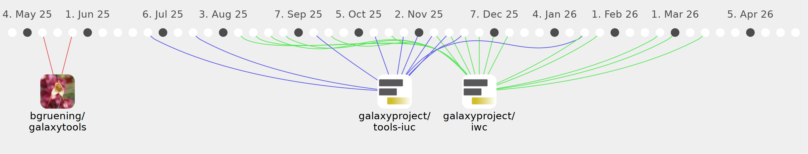

hugolefeuvre

Commits all-time: 58
Commits last year: 58

(58)
- fc5c693
- 235285b
- 4e3719a
- 8f89f92
- c05befa
- dc9567c
- f3f64fc
- 9756b99
- 9d5586c
- b5ccba2
- eb59b61
- 7e3b886
- c40917f
- 799a724
- b2c6307
- e08224b
- 046cb9c
- 5f58937
- 0159907
- 582125b
- 58db407
- 1816f9b
- 8c2b459
- 81ee08c
- cc4c7a0
- df85bf0
- e10164e
- a7231c4
- 8c9c2eb
- 993fbdc
- 6dd4ae4
- 2757e5a
- f89bc73
- 7988d6e
- 353811f
- 852c73f
- 81a1e0f
- d2300d3
- 9e1dfc1
- eac7cb4
- 1e51468
- 50d544b
- e82a0c8
- b43218d
- d57e99c
- f82e14f
- 73929b7
- 37ff768
- 90573f7
- a644a09
- 696ea8d
- 4d5080e
- 91702dc
- 2156265
- 80e68a8
- 8640076
- 95a69c8
- 15ce75a